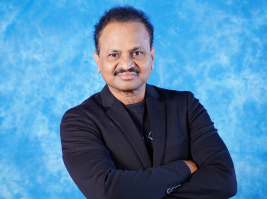

The Chairman of Slate – The School, Mr. Amarnath is a renowned academician who has helped thousands to become IAS, IPS, Group-I and other officers. He is an amazing multi-faceted personality who has donned many hats effortlessly, viz. Educations, media analyst/panelist, child psychologist, humanist, reformist, columnist and thought leader. Founded in 2001 by the Vasireddy Educational Society, our institution has steadily grown to become one of the best schools in Hyderabad, Telangana, and Andhra Pradesh. Through SLATE- The School, Mr. Vasireddy Amarnath wanted to impart quality and value-based education to children, improve the ethical standards in the field of education, and adopt a futuristic approach to promote traditional values amongst the younger generation.